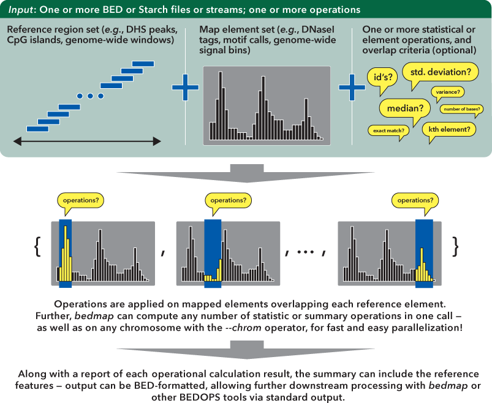
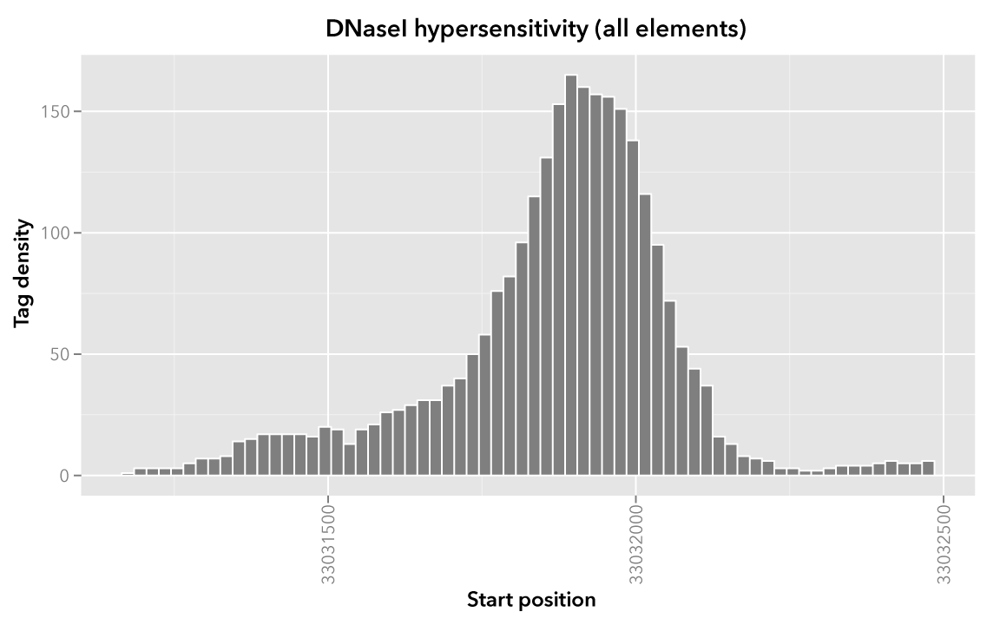
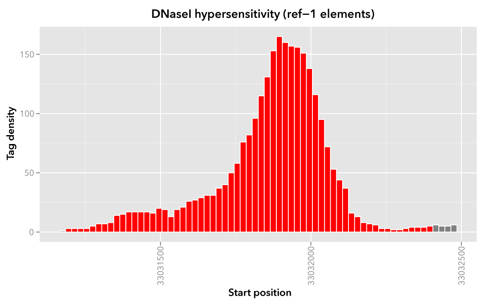
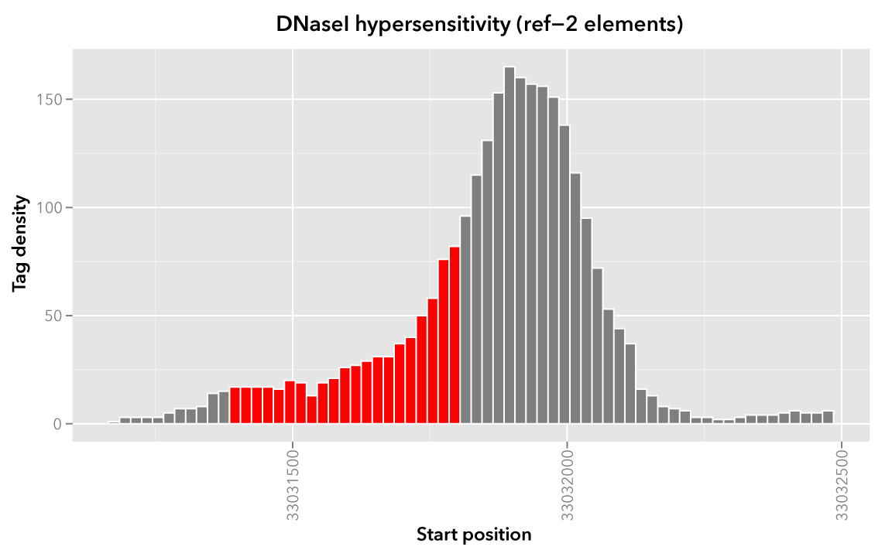
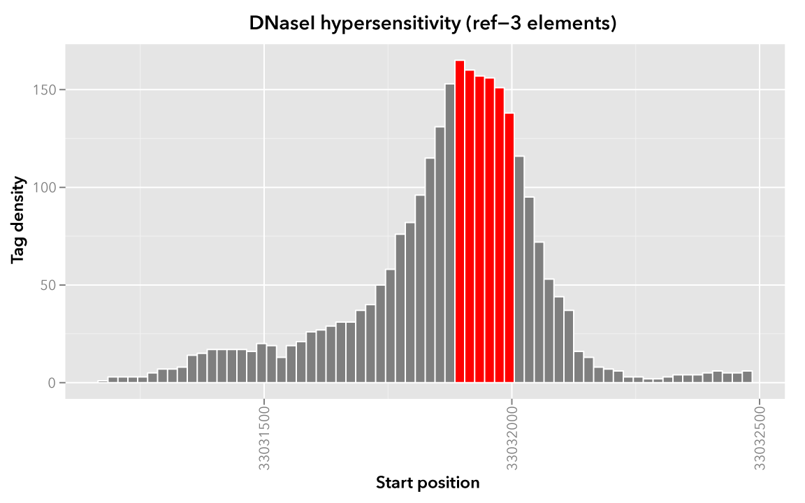
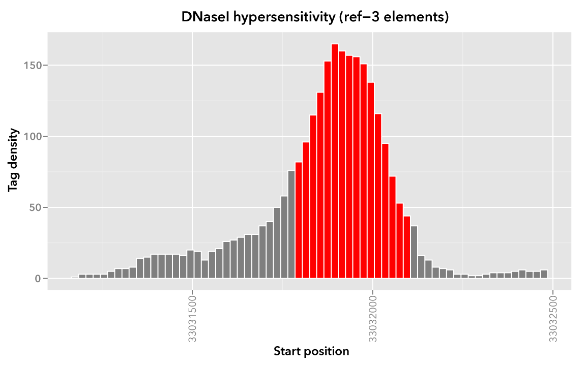

6.2.1. bedmap¶
The bedmap program is used to retrieve and process signal or other features over regions of interest in BED files (including DNase hypersensitive regions, SNPs, transcription factor binding sites, etc.), performing tasks such as: smoothing raw tag count signal in preparation for uploading to the UCSC Genome Browser, finding subsets of elements within a larger coordinate set, filtering multiple BED files by signal, finding multi-input overlap solutions, and much, much more.
6.2.1.1. Inputs and outputs¶
6.2.1.1.1. Input¶
The bedmap program takes in reference and mapping files and calculates statistics for each reference element. These calculations—operations—are applied to overlapping elements from the mapped file:
{kind=link}
The bedmap program requires files in a relaxed variation of the BED format as described by UCSC’s browser documentation. The chromosome field can be any non-empty string, the score field can be any valid numeric value, and information is unconstrained beyond the minimum number of columns required by the chosen options.
Alternatively, bedmap can accept Starch-formatted archives of BED data as input—it is no longer necessary to extract Starch archive data to intermediate BED files!
Support for common headers (including UCSC browser track headers) is available with the --header option, although headers are stripped from output.
Most importantly, bedmap expects sorted inputs. You can use the BEDOPS sort-bed program to ensure your inputs are properly sorted.
Note
You only need to sort once, and only if your input data are unsorted, as all BEDOPS tools take in and export sorted BED data.
Operations are applied over map elements that overlap the coordinates of each reference element. You can use the default overlap criterion of one base, or define your own criteria using the overlap criteria operators.
Once you have overlapping elements, you can either perform numerical calculations on their scores or return identifiers or other non-score information. Additional modifier operators allow customization of how output is presented, to assist with downstream processing in a pipeline setting.
6.2.1.1.2. Output¶
Depending on specified options, the bedmap program can send a variety of delimited information about the reference and mapped elements (as well as analytical results) to standard output. If the --echo option is used, the output will be at least a three-column BED file. The use of predictable delimiters (which are customizable) and the use of UNIX-like standard streams allows easy downstream analysis or post-processing with other tools and scripts.
6.2.1.2. Usage¶
The --help option describes the various mapping and analytical operations and other options available to the end user:
bedmap
citation: http://bioinformatics.oxfordjournals.org/content/28/14/1919.abstract
version: 2.3.0
authors: Shane Neph & Scott Kuehn
USAGE: bedmap [process-flags] [overlap-option] <operation(s)...> <ref-file> [map-file]
All input files must be sorted per the sort-bed utility.
The program accepts BED and starch file formats.
May use '-' for a file to indicate reading from standard input (BED format only).
Traverse <ref-file>, while applying <operation(s)> on qualified, overlapping elements from
<map-file>. Output is one line for each line in <ref-file>, sent to standard output. There
is no limit on the number of operations you can specify to compute in one bedmap call.
If <map-file> is omitted, the given file is treated as both the <ref-file> and <map-file>.
This usage is more efficient than specifying the same file twice.
Arguments may be given in any order before the input file(s).
Process Flags:
--------
--chrom <chromosome> Process data for given <chromosome> only.
--delim <delim> Change output delimiter from '|' to <delim> between columns (e.g. '\t').
--ec Error check all input files (slower).
--faster (advanced) Strong input assumptions are made. Review docs before use.
Compatible with --bp-ovr and --range overlap options only.
--header Accept headers (VCF, GFF, SAM, BED, WIG) in any input file.
--help Print this message and exit successfully.
--multidelim <delim> Change delimiter of multi-value output columns from ';' to <delim>.
--prec <int> Change the post-decimal precision of scores to <int>. 0 <= <int>.
--sci Use scientific notation for score outputs.
--skip-unmapped Print no output for a row with no mapped elements.
--version Print program information.
Overlap Options (At most, one may be selected. By default, --bp-ovr 1 is used):
--------
--bp-ovr <int> Require <int> bp overlap between elements of input files.
--range <int> Grab <map-file> elements within <int> bp of <ref-file>'s element,
where 0 <= int. --range 0 is an alias for --bp-ovr 1.
--fraction-ref <val> The fraction of the element's size from <ref-file> that must overlap
the element in <map-file>. Expect 0 < val <= 1.
--fraction-map <val> The fraction of the element's size from <map-file> that must overlap
the element in <ref-file>. Expect 0 < val <= 1.
--fraction-both <val> Both --fraction-ref <val> and --fraction-map <val> must be true to
qualify as overlapping. Expect 0 < val <= 1.
--fraction-either <val> Either --fraction-ref <val> or --fraction-map <val> must be true to
qualify as overlapping. Expect 0 < val <= 1.
--exact Shorthand for --fraction-both 1. First 3 fields from <map-file> must
be identical to <ref-file>'s element.
Operations: (Any number of operations may be used any number of times.)
----------
SCORE:
<ref-file> must have at least 3 columns and <map-file> 5 columns.
--cv The result of --stdev divided by the result of --mean.
--kth <val> Generalized median. Report the value, x, such that the fraction <val>
of overlapping elements' scores from <map-file> is less than x,
and the fraction 1-<val> of scores is greater than x. 0 < val <= 1.
--mad <mult=1> The median absolute deviation of overlapping elements in <map-file>.
Multiply mad score by <mult>. 0 < mult, and mult is 1 by default.
--max The highest score from overlapping elements in <map-file>.
--max-element An element with the highest score from overlapping elements in <map-file>.
--mean The average score from overlapping elements in <map-file>.
--median The median score from overlapping elements in <map-file>.
--min The lowest score from overlapping elements in <map-file>.
--min-element An element with the lowest score from overlapping elements in <map-file>.
--stdev The square root of the result of --variance.
--sum Accumulated scores from overlapping elements in <map-file>.
--tmean <low> <hi> The mean score from overlapping elements in <map-file>, after
ignoring the bottom <low> and top <hi> fractions of those scores.
0 <= low <= 1. 0 <= hi <= 1. low+hi <= 1.
--variance The variance of scores from overlapping elements in <map-file>.
----------
NON-SCORE:
<ref-file> must have at least 3 columns.
For --echo-map-id/echo-map-id-uniq, <map-file> must have at least 4 columns.
For --echo-map-score, <map-file> must have at least 5 columns.
For all others, <map-file> requires at least 3 columns.
--bases The total number of overlapping bases from <map-file>.
--bases-uniq The number of distinct bases from <ref-file>'s element covered by
overlapping elements in <map-file>.
--bases-uniq-f The fraction of distinct bases from <ref-file>'s element covered by
overlapping elements in <map-file>.
--count The number of overlapping elements in <map-file>.
--echo Print each line from <ref-file>.
--echo-map List all overlapping elements from <map-file>.
--echo-map-id List IDs from all overlapping <map-file> elements.
--echo-map-id-uniq List unique IDs from overlapping <map-file> elements.
--echo-map-range Print genomic range of overlapping elements from <map-file>.
--echo-map-score List scores from overlapping <map-file> elements.
--indicator Print 1 if there exists an overlapping element in <map-file>, 0 otherwise.
6.2.1.3. Operations¶
To demonstrate the various operations in bedmap, we start with two simple, pre-sorted BED files that we label as Map and Reference (see the Downloads section for files you can use to follow along).
Our Map file is a snippet of real-world BED data derived from ENCODE experiments conducted by our lab: specifically, raw DNaseI hypersensitivity signal for the human K562 cell line (region chr21:33031165-33032485, assembly GRCh37/h19 and table wgEncodeUwDnaseK562RawRep1 from the UCSC Genome Browser).
This raw signal is the density of sequence tags which map within a 150 bp sliding window, at 20 bp steps across the genome—a smoothed picture of DNaseI hypersensitivity:
chr21 33031165 33031185 map-1 1.000000
chr21 33031185 33031205 map-2 3.000000
chr21 33031205 33031225 map-3 3.000000
chr21 33031225 33031245 map-4 3.000000
chr21 33031245 33031265 map-5 3.000000
chr21 33031265 33031285 map-6 5.000000
chr21 33031285 33031305 map-7 7.000000
chr21 33031305 33031325 map-8 7.000000
chr21 33031325 33031345 map-9 8.000000
chr21 33031345 33031365 map-10 14.000000
chr21 33031365 33031385 map-11 15.000000
chr21 33031385 33031405 map-12 17.000000
chr21 33031405 33031425 map-13 17.000000
...
chr21 33032425 33032445 map-64 5.000000
chr21 33032445 33032465 map-65 5.000000
chr21 33032465 33032485 map-66 6.000000
When visualized, the signal data has the following appearance:
{kind=link}
Note
Rectangles colored in grey represent each of the sixty-six map elements. The x-axis represents the start coordinate of the map element, while the y-axis denotes the tag density, or sum of tags over that element’s 20-base window.
Our sample Reference file is not as exciting. It is just three BED elements which span portions of this density file:
chr21 33031200 33032400 ref-1
chr21 33031400 33031800 ref-2
chr21 33031900 33032000 ref-3
These reference elements could be exons, promoter regions, etc. It doesn’t matter for purposes of demonstration here, except to say that we can use bedmap to ask some questions about the Reference set.
Among them, what are the quantitative and qualitative features of the map elements that span over these three reference regions? For example, we might want to know the mean DNase hypersensitivity across each—the answer may have some biological significance.
It may help to first visualize the reference regions and the mapped elements associated with them. A default bedmap task will operate on the following set of mapped (red-colored) elements, for each reference element ref-1, -2 and -3.
Here we show elements from the Map set which overlap the ref-1 region chr21:33031200-33032400, colored in red:
{kind=link}
Likewise, here are elements of the Map set which overlap the ref-2 element chr21:33031400-33031800 and ref-3 element chr21:33031900-33032000, respectively, with the same coloring applied:
 {kind=link}
{kind=link}
In these sample files, we provide the Map file with ID and score columns, and the Reference file with an ID column. These extra columns are not required by bedmap, but we can use the information in these columns in conjunction with the options provided by bedmap to identify matches, retrieve matched signals, and summarize data about signal across mapped elements.
6.2.1.3.1. Overlap criteria¶
The default overlap criterion that bedmap uses is one base. That is, one or more bases of overlap between reference and mapping elements is sufficient for inclusion in operations. This value can be adjusted with the --bp-ovr option. The --range overlap option implicitly applies --bp-ovr 1 after symmetrically padding elements.
If a fractional overlap is desired, the --fraction-{ref,map,both,either} options provide the ability to filter on overlap by a specified percentage of the length of either or both the reference and mapping elements.
Finally, the --exact flag enforces exact matches between reference and mapping elements.
Note
The --exact option is an alias for --fraction-both 1.
6.2.1.3.1.1. Using --faster with --bp-ovr and --range¶
The --faster modifier works with the --bp-ovr overlap and --range specifiers to dramatically increase the performance of bedmap, when the following input restriction is met:
- No fully-nested elements in any input mapping file (duplicate elements and other overlapping elements are okay).
Note
The details of this nested-element restriction are explained in more detail in the bedextract documentation.
This option also works with the --ec error checking flag, which indicates if the data contain nested elements. Using --ec carries its usual overhead, but as it only doubles the much-improved execution time, it may be worth using.
Tip
To give an idea of the speed improvement, a --range 100000 --echo --count operation on 8.4 million, non-nested mapping elements (DNaseI footprints across multiple cell types) took 2 minutes and 55 seconds without speed-up. By adding the --faster flag, the same calculation took 10 seconds. That is an 18-fold speed improvement.
One scenario where this option can provide great speed gains is where --range is used with a large numerical parameter. Another scenario where this option is very useful is where the reference file has large elements, and the mapping file is made up of many small elements—specifically, where a number of small elements overlap each big element from the reference file.
An example of a research application for our lab which benefits from this flag is where we perform statistical analysis of large numbers of small sequence tags that fall in hotspot regions.
If your data meet the non-nesting criteria, using --faster with --bp-ovr or --range is highly recommended.
Note
Our lab works with BED data of various types: cut-counts, hotspots, peaks, footprints, etc. These data generally do not contain nested elements and so are amenable to use with bedmap’s --faster flag for extracting overlapping elements.
However, other types of data can be problematic. FIMO search results, for example, may cause trouble, where the boundaries of one motif hit can be contained within another larger hit. Or paired-end sequence data, where tags are not of a fixed length.
Be sure to consider the makeup of your BED data before using --faster.
Tip
Using --ec with --faster will report if any nested elements exist in your data.
6.2.1.3.2. Score operations¶
Score operators apply a numerical calculation on the values of the score column of mapping elements. Per UCSC specifications, bedmap assumes the score data are stored in the fifth column.
The variety of score operators include common statistical measures:
- mean (--mean)
- trimmed mean (--tmean)
- standard deviation (--stdev)
- variance (--variance)
- coefficient of variance (--cv)
- median (--median)
- median absolute deviation (--mad)
- k-th order statistic (--kth)
One can also take the sum of scores (--sum), find the minimum or maximum score over a region (--min and --max, respectively), or retrieve the map element with the least or greatest signal over the reference region (--min-element and --max-element, respectively).
We will demonstrate some of these operators by applying them to the Reference and Map datasets (see the Downloads section for sample inputs).
As a reminder, the Map file contains regions of DNaseI-seq tag density. If we want the mean of the density across Reference elements, we use the --mean option:
$ bedmap --echo --mean reference.bed map.bed > mappedReferences.mean.bed
The --echo flag prints each Reference element, while the --mean flag calculates the mean signal of the Map elements which overlap the reference element:
$ more mappedReferences.mean.bed
chr21 33031200 33032400 ref-1|43.442623
chr21 33031400 33031800 ref-2|31.571429
chr21 33031900 33032000 ref-3|154.500000
This result tells us that the mean density across regions ref-1, ref-2 and ref-3 is 44.442623, 31.571429 and 154.5, respectively.
Note
The pipe character (|) delimits the results of each specified option (with the exception of the so-called “multi” operators that return multiple results — this is discussed in the section on --echo flags). In the provided example, the delimiter divides the reference element from the mean score across the reference element.
Tip
Because we used the --echo flag in this example, we are guaranteed output that is at least three-column BED format and which is sorted, which can be useful for pipeline design, where results are piped downstream to bedmap, bedops and other BEDOPS and UNIX utilities.
If we simply want the mean values and don’t care about the reference data, we can skip --echo:
$ bedmap --mean reference.bed map.bed
43.442623
31.571429
154.500000
While not very detailed, this single-column representation can be useful for those who use UNIX utilities like paste or need to do additional downstream calculations with R or other utilities, where the reference information is unnecessary (or, at least, more work to excise).
If a reference element does not overlap any map element, then a NAN is returned for any operation on that entry, e.g., we know that the ad hoc element chr21:1000-2000 does not overlap any member of our Map dataset, and there is therefore no mean value that can be calculated for that element:
$ echo -e "chr21\t1000\t2000\tfoo-1" | bedmap --echo --mean - map.bed
chr21 1000 2000 foo-1|NAN
Tip
For this example, we use echo -e to send bedmap a sample reference coordinate by way of standard input. The bedmap program can process any BED data from the standard input stream, either as the reference or map data, by placing the dash character (-) where the file name would otherwise go.
In the example above, we sent bedmap a single reference element via standard input, but multiple lines of BED data can come from other upstream processes.
Using standard streams is useful for reducing file I/O and improving performance, especially in situations where one is using bedmap in the middle of an extended pipeline.
While bedmap returns a NAN if there are no mapped elements that associate with a reference element, we may want to filter these lines out. We can apply the --skip-unmapped option to leave out reference elements without mapped elements:
$ echo -e "chr21\t1000\t2000\tfoo-1" | bedmap --echo --mean --skip-unmapped - map.bed
$
Tip
The --skip-unmapped option is functionally equivalent to the following awk script:
$ echo -e "chr21\t1000\t2000\tfoo-1" \
| bedmap --echo --mean - map.bed \
| awk -F"|" '{ if ($2 != "NAN") print $0 }'
It should be more convenient to use --skip-unmapped where unmapped results are not needed.
Another option is to retrieve the mapping element with the highest or lowest score within the reference region, using the --max-element or --min-element operators, respectively.
Going back to our sample Reference and Map data, we can search for the highest scoring mapping elements across the three reference elements:
$ bedmap --echo --max-element --prec 0 reference.bed map.bed
chr21 33031200 33032400 ref-1|chr21 33031885 33031905 map-37 165
chr21 33031400 33031800 ref-2|chr21 33031785 33031805 map-32 82
chr21 33031900 33032000 ref-3|chr21 33031885 33031905 map-37 165
Over reference elements ref-1 and ref-3, the mapping element map-37 has the highest score. Over reference element ref-2, the highest scoring mapping element is map-32.
Likewise, we can repeat this operation, but look for the lowest scoring elements, instead:
$ bedmap --echo --min-element --prec 0 reference.bed map.bed
chr21 33031200 33032400 ref-1|chr21 33032265 33032285 map-56 2
chr21 33031400 33031800 ref-2|chr21 33031525 33031545 map-19 13
chr21 33031900 33032000 ref-3|chr21 33031985 33032005 map-42 138
Note
Where there are ties in score values, there is no guarantee about which tied element will be chosen. In this case, the --echo-map operator can be used to manually examine the full list of elements and apply different logic.
We can also perform multiple score operations, which are summarized on one line, e.g., to show the mean, standard deviation, and minimum and maximum signal over each Reference element, we simply add the requisite options in series:
$ bedmap --echo --mean --stdev --min --max reference.bed map.bed
chr21 33031200 33032400 ref-1|43.442623|50.874527|2.000000|165.000000
chr21 33031400 33031800 ref-2|31.571429|19.638155|13.000000|82.000000
chr21 33031900 33032000 ref-3|154.500000|9.311283|138.000000|165.000000
Multiple score-operational results are ordered identically with the command-line options. The section on formatting score output demonstrates how one can change the precision and general format of numerical score results.
6.2.1.3.3. Non-score operations¶
Sometimes it is useful to get summary or non-score statistics about the map elements. This category of operators returns information from the ID column of mapping elements, or can return counts and base overlap totals.
Note
As with score data, we follow the UCSC convention for the BED format and retrieve ID data from the fourth column.
6.2.1.3.3.1. Echo¶
The ID, score and coordinate columns of the reference and map files are very useful for reading and debugging results, or reporting a more detailed mapping.
We can use the --echo, --echo-map, --echo-map-id, --echo-map-id-uniq, --echo-map-score and --echo-map-range flags to tell bedmap to report additional details about the reference and map elements.
The --echo flag reports each reference element. We have already seen the application of --echo in earlier examples. The option helps to clearly associate results from other chosen operations with specific reference elements. Additionally, --echo enables the output from bedmap to be used as input to additional BEDOPS utilities, including bedmap itself.
The --echo-map flag gathers overlapping mapped elements for every reference element. The option is useful for debugging and detailed downstream processing needs. This is the most general operation in bedmap in that overlapping elements are returned in full detail, for every reference element. While results are well-defined and easily parsed, the output can be very large and difficult to read.
As an example of using the --echo-map-id operator in a biological context, we examine a FIMO analysis that returns a subset of transcription factor binding sites in BED format, with TRANSFAC motif names listed in the ID column:
chr1 4534161 4534177 -V_GRE_C 4.20586e-06 - CGTACACACAGTTCTT
chr1 4534192 4534205 -V_STAT_Q6 2.21622e-06 - AGCACTTCTGGGA
chr1 4534209 4534223 +V_HNF4_Q6_01 6.93604e-06 + GGACCAGAGTCCAC
chr1 4962522 4962540 -V_GCNF_01 9.4497e-06 - CCCAAGGTCAAGATAAAG
chr1 4962529 4962539 +V_NUR77_Q5 8.43564e-06 + TTGACCTTGG
...
This input is available from the Downloads section as the Motifs dataset.
We will treat this as a map file, asking which motif IDs are associated with a region of interest (chr1:4534150-4534300). To do this using bedmap, we use the --echo-map-id option to summarize the IDs of mapped elements:
$ echo -e "chr1\t4534150\t4534300\tref-1" | bedmap --echo --echo-map-id - motifs.bed
chr1 4534150 4534300 ref-1|-V_GRE_C;-V_STAT_Q6;+V_HNF4_Q6_01
Note
To expand on the types of questions one can answer with bedmap in this context, in conjunction with the --count operator (described below), one can quantify predicted transcription factor binding sites by sliding a reference window across the entire genome.
One could determine, for example, where predicted sites are most prevalent and investigate the distribution of factors or other genomic features at or around these dense regions.
The --echo-map-id-uniq operator works exactly like --echo-map-id, except that duplicate IDs are removed from the result. For example, we can pull all the motifs hits from a wide region on chr2:
$ echo -e "chr2\t1000\t10000000\tref-1" | bedmap --echo --echo-map-id - motifs.bed
chr2 1000 10000000 ref-1|+V_OCT1_05;+V_OCT_C;-V_CACD_01;+V_IRF_Q6;-V_BLIMP1_Q6;-V_IRF2_01;-V_IRF_Q6_01;+V_SMAD_Q6_01;-V_TATA_01;-V_TATA_C;-V_CEBP_01;-V_HNF6_Q6;+V_MTF1_Q4;+V_MYOD_Q6_01;-V_KROX_Q6;+V_EGR1_01;-V_SP1SP3_Q4;+V_EGR_Q6;+V_SP1_Q6;-V_SP1_Q2_01;-V_CKROX_Q2;+V_SP1_Q6_01;-V_SREBP1_Q5;+V_VDR_Q3;-V_DMRT1_01;-V_DMRT7_01;+V_DMRT1_01;-V_DMRT1_01;-V_DMRT7_01;+V_DMRT1_01;-V_DMRT1_01;-V_DMRT7_01
However, some hits (e.g., -V_DMRT7_01) show up two or more times. If we want a non-redundant list, we replace --echo-map-id with --echo-map-id-uniq:
$ echo -e "chr2\t1000\t10000000\tref-1" | bedmap --echo --echo-map-id-uniq - motifs.bed
chr2 1000 10000000 ref-1|+V_DMRT1_01;+V_EGR1_01;+V_EGR_Q6;+V_IRF_Q6;+V_MTF1_Q4;+V_MYOD_Q6_01;+V_OCT1_05;+V_OCT_C;+V_SMAD_Q6_01;+V_SP1_Q6;+V_SP1_Q6_01;+V_VDR_Q3;-V_BLIMP1_Q6;-V_CACD_01;-V_CEBP_01;-V_CKROX_Q2;-V_DMRT1_01;-V_DMRT7_01;-V_HNF6_Q6;-V_IRF2_01;-V_IRF_Q6_01;-V_KROX_Q6;-V_SP1SP3_Q4;-V_SP1_Q2_01;-V_SREBP1_Q5;-V_TATA_01;-V_TATA_C
The --echo-map-score flag works in a similar fashion to --echo-map-id, reporting scores instead of IDs. The formatting score output section demonstrates how one can use --echo-map-score to summarize score data from mapped elements.
Note
Both the --echo-map-id and --echo-map-score flags use the semi-colon (;) as a default delimiter, which may be changed with the --multidelim option (see the Delimiters section for more information on this and other modifier operators).
Finally, the --echo-map-range flag tells bedmap to report the genomic range of overlapping mapped elements. If we apply this flag to the Reference and Map datasets (see Downloads), we get the following result:
$ bedmap --echo --echo-map-range reference.bed map.bed
chr21 33031200 33032400 ref-1|chr21 33031185 33032405
chr21 33031400 33031800 ref-2|chr21 33031385 33031805
chr21 33031900 33032000 ref-3|chr21 33031885 33032005
Note
The --echo-map-range option produces three-column BED results that are not always guaranteed to be sorted. The --echo operation is independent, and it produces reference elements in proper BEDOPS order, as shown. If the results of the --echo-map-range option will be used directly as BED coordinates in downstream BEDOPS analyses (i.e., no --echo operator), first pipe them to sort-bed to ensure proper sort order.
6.2.1.3.3.2. Element and overlap statistics¶
Looking back at the Map and Reference datasets, let’s say we want to count the number of elements in Map that overlap a given Reference element, as well as the extent of that overlap as measured by the total number of overlapping bases from mapped elements. For this, we use the --count and --bases flags, respectively:
$ bedmap --echo --count --bases reference.bed map.bed
chr21 33031200 33032400 ref-1|61|1200
chr21 33031400 33031800 ref-2|21|400
chr21 33031900 33032000 ref-3|6|100
This result tells us that there are 61 elements in Map that overlap ref-1, and 1200 total bases from the 61 elements overlap bases of ref-1. Similarly, 21 elements overlap ref-2, and 400 total bases from the 21 elements overlap bases of ref-2, etc.
The --bases operator works on Map elements. If, instead, we want to quantify the degree to which Reference elements overlap Map , we can use the --bases-uniq and --bases-uniq-f flags to count the number of bases and, respectively, the fraction of total bases within Reference which are covered by overlapping elements in Map.
This last example uses Motifs elements and all of the options: --bases, --bases-uniq and --bases-uniq-f, to illustrate their different behaviors:
$ echo -e "chr1\t4534161\t4962550\tadhoc-1" | bedmap --echo --bases --bases-uniq --bases-uniq-f - motifs.bed
chr1 4534161 4962550 adhoc-1|169|71|0.000166
6.2.1.3.3.3. Indicator¶
If we simply want to know if a reference element overlaps one or more map elements, we can use the --indicator operator, which returns a 1 or 0 value, depending on whether there is or is not an overlap, respectively. For example:
$ bedmap --echo --indicator reference.bed map.bed
chr21 33031200 33032400 ref-1|1
chr21 33031400 33031800 ref-2|1
chr21 33031900 33032000 ref-3|1
All three of our reference elements have mapped elements associated with them. If we, instead, test a reference element that we know ahead of time does not contain overlapping map elements, we get a 0 result, as we expect:
$ echo -e "chr21\t1000\t2000\tfoo-1" | bedmap --echo --indicator - map.bed
chr21 1000 2000 foo-1|0
Note
The --indicator option is equivalent to testing if the result from --count is equal to or greater than 0:
$ bedmap --count foo bar | awk '{ print ($1 > 0 ? "1" : "0") }' -
This option eliminates the need for piping bedmap results to awk.
6.2.1.3.4. Modifiers¶
These options can modify the coordinates used for generating the set of mapped regions, as well as alter the presentation of results. These modifiers can be useful, depending on how bedmap is used in your own workflow.
6.2.1.3.4.1. Range¶
The --range option uses --bp-ovr 1 (i.e., one base of overlap) after internally and symmetrically padding reference coordinates by a specified positive integer value. The larger reference elements are used to determine overlapping mapped elements, prior to applying chosen operations.
Tip
To change the coordinates of a BED file on output (symmetrically or asymmetrically), see the --range option applied with bedops –everything.
As an example, we look again at element ref-3 from the Reference dataset and where it overlaps with Map:
chr21 33031900 33032000 ref-3
If we want to apply an operation on 100 bp upstream and downstream of this and the other reference elements, we can use the --range option:
$ bedmap --echo --echo-map-id --range 100 reference.bed map.bed > mappedReference.padded.bed
Any operation will now be applied to a broader set of mapped elements, as visualized here with a “padded” version of ref-3:
{kind=link}
We can compare mean densities, in order to see the effect of using --range. Here is the mean density across the original, unpadded ref-3:
$ bedmap --echo --mean reference.bed map.bed
...
chr21 33031900 33032000 ref-3|154.500000
And here is the mean density across the padded ref-3:
$ bedmap --echo --range 100 --mean reference.bed map.bed
...
chr21 33031900 33032000 ref-3|117.750000
Looking at the visualizations above, we would expect the mean density to be lower, as the expanded reference region includes map elements with lower tag density, which pushes down the overall mean.
Note
The --range option is classified as an overlap option (like --fraction-map or --exact) that implicitly uses --bp-ovr 1 after padding reference elements. As shown above, the extended padding is an internal operation and it is not reflected in the output with the --echo option. Real padding can be added by using bedops --range 100 --everything reference.bed and piping results to bedmap.
6.2.1.3.4.2. Using --faster with --range¶
The --faster modifier works with the --bp-ovr overlap and --range specifiers to dramatically increase the performance of bedmap, where the following input restriction is met:
- No fully-nested elements in any input mapping file (duplicate elements and other overlapping elements are okay).
Note
The details of this nested-element restriction are explained in more detail in the bedextract documentation.
This option also works with the --ec error checking flag, which indicates if the data contain nested elements. Using --ec carries its usual overhead, but as it only doubles the much-improved execution time, it may be worth using.
Tip
To give an idea of the speed improvement, a --range 100000 --echo --count operation on 8.4 million, non-nested mapping elements (DNaseI footprints across multiple cell types) took 2 minutes and 55 seconds without speed-up. By adding the --faster flag, the same calculation took 10 seconds. That is an 18-fold speed improvement.
One scenario where this option can provide great speed gains is where --range is used with a large numerical parameter. Another scenario where this option is very useful is where the reference file has large elements, and the mapping file is made up of many small elements—specifically, where a number of small elements overlap each big element from the reference file.
An example of a research application for our lab which benefits from this flag is where we perform statistical analysis of large numbers of small sequence tags that fall in hotspot regions.
If your data meet the non-nesting criteria, using --faster with --bp-ovr or --range is highly recommended.
Note
Our lab works with BED data of various types: cut-counts, hotspots, peaks, footprints, etc. These data generally do not contain nested elements and so are amenable to use with bedmap’s --faster flag for extracting overlapping elements.
However, other types of data can be problematic. FIMO search results, for example, may cause trouble, where the boundaries of one motif hit can be contained within another larger hit. Or paired-end sequence data, where tags are not of a fixed length.
Be sure to consider the makeup of your BED data before using --faster.
Tip
Using --ec with --faster will report if any nested elements exist in your data. Using --ec carries its usual overhead, but as it only doubles the much-improved execution time, it may be worth using.
6.2.1.3.4.3. Formatting score output¶
The --prec and --sci process flags are useful for controlling the arithmetic precision and notation of score output, when used with the --echo-map-score, --sum, --mean and other numerical score operators. This will also format results from the non-score operator --bases-uniq-f.
To demonstrate their use, we revisit the Motifs dataset, which includes p-values reporting the statistical significance of putative transcription factor binding sites:
chr1 4534161 4534177 -V_GRE_C 4.20586e-06 - CGTACACACAGTTCTT
chr1 4534192 4534205 -V_STAT_Q6 2.21622e-06 - AGCACTTCTGGGA
chr1 4534209 4534223 +V_HNF4_Q6_01 6.93604e-06 + GGACCAGAGTCCAC
chr1 4962522 4962540 -V_GCNF_01 9.4497e-06 - CCCAAGGTCAAGATAAAG
chr1 4962529 4962539 +V_NUR77_Q5 8.43564e-06 + TTGACCTTGG
...
Let’s say we want a list of motifs and associated p-values mapped to a coordinate range of interest (chr1:4534150-4534300). In order to conserve space, however, we only want two significant figures for the score data. So we use --prec 2 to try to reformat the score output:
$ echo -e "chr1\t4534150\t4534300\tref-1" \
| bedmap --prec 2 --echo --echo-map-id --echo-map-score - motifs.bed \
> motifsForRef1.bed
Here is the output:
chr1 4534150 4534300 ref-1|-V_GRE_C;-V_STAT_Q6;+V_HNF4_Q6_01|0.00;0.00;0.00
It looks like our p-values were rounded down to zeroes, which is not what we want. But we remember that the binding site p-values are listed in scientific notation, and so we add the --sci flag to preserve the format of the score data in scientific notation:
$ echo -e "chr1\t4534150\t4534300\tref-1" \
| bedmap --prec 2 --sci --echo --echo-map-id --echo-map-score - motifs.bed \
> correctedMotifsForRef1.bed
Here is the corrected output:
chr1 4534150 4534300 ref-1|-V_GRE_C;-V_STAT_Q6;+V_HNF4_Q6_01|4.21e-06;2.22e-06;6.94e-06
Rounding of the mantissa is done to the precision specified in --prec.
Obviously, the --sci flag is useful for very small or large score data. You probably wouldn’t use --sci with most integer signal (e.g., raw tag counts or most discrete measurements).
6.2.1.3.4.4. Delimiters¶
As shown in the examples above, the pipe (|) and semi-colon (;) characters are used to split operational and echo-ed results, respectively. The --delim and --multidelim flags change these delimiters to characters of your choice, which let you pick what makes most sense for your custom post-processing or other downstream pipelining work (for instance, in our lab --delim "\t" is a popular alternative to the default | character).
As an example, the following bedmap result is obtained from using the --echo, --echo-map-id, --echo-map-score and --max options on the Motifs dataset:
chr1 4534150 4534300 ref-1|-V_GRE_C;-V_STAT_Q6;+V_HNF4_Q6_01|4.21e-06;2.22e-06;6.94e-06|6.94e-06
For this result, the bedmap program organizes data using the default set of delimiters:
[reference-line] | [map-IDs] | [map-scores] | [maximum-map-score]
Here, you can use the --delim option to replace the pipe character with an alternative delimiter.
Within the map-IDs and map-scores subgroups, individual results are split further by semi-colon:
[id-1] ; [id-2] ; ... ; [id-N]
[score-1] ; [score-2] ; ... ; [score-N]
You can use the --multidelim option to replace the semi-colon with another delimiter, e.g.:
$ echo -e "chr1\t4534150\t4534300\tref-1" | bedmap --multidelim '$' --echo --echo-map-id - motifs.bed
chr1 4534150 4534300 ref-1|-V_GRE_C$-V_STAT_Q6$+V_HNF4_Q6_01
Note
Grouped results derived with the --echo-map, --echo-map-id, and --echo-map-score options are listed in identical order. In other words, ID results line up at the same position as their score result counterparts when both --echo-map-id and --echo-map-score are chosen together. The same applies to the --echo-map option.
6.2.1.4. Per-chromosome operations (–chrom)¶
All operations on inputs described so far can be restricted to one chromosome, by adding the --chrom <val> operator. This is highly useful for cluster-based work, where operations on large BED inputs can be split up by chromosome and pushed to separate cluster nodes.
Here, we use the --echo and --echo-map-id operators on our Motifs dataset, but we limit operations to those on elements on chromosome chr2:
$ echo -e "chr2\t1000000\t5000000\tref-1" | bedmap --chrom chr2 --echo --echo-map-id - motifs.bed
chr2 1000000 5000000 ref-1|+V_OCT1_05;+V_OCT_C;-V_CACD_01;+V_IRF_Q6;-V_BLIMP1_Q6;-V_IRF2_01;-V_IRF_Q6_01
If the reference elements are not on the specified chromosome provided to --chrom, then no output is generated. In the following example, our reference element is on chr2, but we ask for operations to be limited to chr3, yielding an empty set:
$ echo -e "chr2\t1000000\t5000000\tref-1" | bedmap --chrom chr3 --echo --echo-map-id - motifs.bed
$
6.2.1.5. Starch support¶
The bedmap application supports use of Starch-formatted archives as inputs, as well as text-based BED data. One or multiple inputs may be Starch archives.
For example, we can repeat the overlapping-motif example from the Echo section, using a Starch archive made from the regions in Motifs:
$ echo -e "chr1\t4534150\t4534300\tref-1" | bedmap --echo --echo-map-id - motifs.bed.starch
chr1 4534150 4534300 ref-1|-V_GRE_C;-V_STAT_Q6;+V_HNF4_Q6_01
By combining the --chrom operator with operations on Starch archives, the end user can achieve improved computing performance and disk space savings, particularly where bedops, bedmap and closest-features operations are applied with a computational cluster on separate chromosomes.
6.2.1.6. Error checking¶
The bedmap program does not perform error checking by default, but it offers an --ec option for comprehensive checks.
Note
Use of the --ec option will roughly double the running time, but it provides stringent error checking to ensure all inputs are valid. --ec can help check problematic input and offers helpful hints for any needed corrections, when problems are detected.
6.2.1.7. Endlines¶
The bedmap program expects endlines (\n) appropriate to Linux and Mac OS X operating systems. Microsoft Windows uses different characters for endlines. In UNIX-like environments, you can quickly check to see if your file contains the native endlines with this command:
$ head myData.bed | cat -et
The appropriate endlines will show up as a $ character at the end of each line. See the dos2unix program (sometimes called fromdos) to convert newlines from files saved on Microsoft Windows. The unix2dos (or todos) program can convert files in the other direction, if needed.
6.2.1.8. Downloads¶
- Sample Reference dataset: reference elements
- Sample Map dataset: map elements
- Sample Motifs dataset: motif elements

Table Of Contents
- 6.2.1. bedmap
- 6.2.1.1. Inputs and outputs
- 6.2.1.2. Usage
- 6.2.1.3. Operations
- 6.2.1.4. Per-chromosome operations (–chrom)
- 6.2.1.5. Starch support
- 6.2.1.6. Error checking
- 6.2.1.7. Endlines
- 6.2.1.8. Downloads